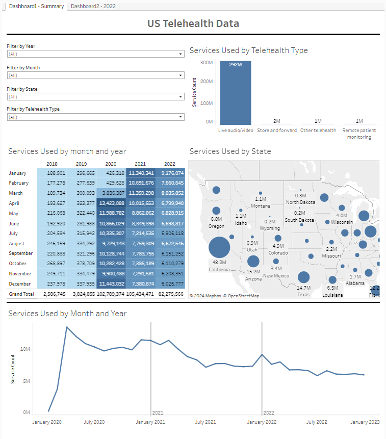

Telehealth is the means of providing healthcare remotely using telecoms technology.
In this project I will be exploring a dataset consisting of teleheath usage in the USA. I will start by executing queries to retrieve specific insights using SQL before visualizing the data using Tableau. This dataset is provided by the US government and is intended for public access and use.
After uploading the dataset to google's BigQuery, I executed a query to find out which state has the highest number of telehealth uses.


After seeing California's 482m service uses so far ahead of the rest of the pack, I wanted
to see how the results would look if we took each state's population in to consideration. I retrieved the
population data from the US census website
and uploaded it to SQL.


When we order the table by the Users divided by Population column, we are presented with a new angle where California moves down to 15th, and Massachusetts and Arizona are the only states to remain in the top 9.

I then took a look at the number of telehealth services used by year.


Here we see a sharp rise in service uses from 3m in 2019, to 102m in 2020. This coinsides with the Covid-19 breakout
where lockdowns led to telehealth services becoming essential.
Next I looked at how many times each telehealth service is being used.


Live audio/video is the dominant servce with 292m uses, followed by Store and Forward services which was only used 2m times.
I then ammended this query so it also showed the percentage of total uses each service had.


I created two dashboards using Tableau to visualize this data. The first dashboard is an overall summary of the data and the second dashboard focusing on the 2022 data vs the previous year. I was able to use line graphs, bar graphs, maps, and heatmap tables to visualize this dataset.
